Fechamento Tesouraria/Caixa
O fechamento de caixa consiste na conferência dos valores entregues pelo Operador de Caixa ao final do dia de trabalho.
Esses valores devem ser registrados separadamente nas carteiras de tesouraria, como dinheiro, cheques e cartões.
A diferença entre o total de vendas do caixa (conforme indicado no Relatório de Saída do Operador) pode resultar em uma quebra de caixa, que será cobrada do operador caso exceda os limites estabelecidos.
Esse procedimento deve ser realizado no mesmo dia do evento e registrado até o final do expediente ou, no máximo, no dia seguinte.
Para realizar esse processo deverá seguir os seguintes passos:
Passo 1: Menu: Financeiro > Movimentações Tesouraria > Digitação cartão TEF/POS.
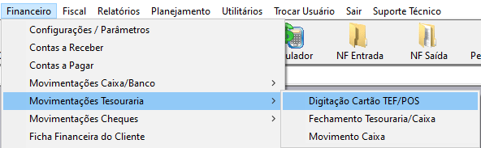
Nesta tela você digitará os lançamentos referentes as vendas realizadas no cartão POS.
Para realizar os lançamentos das vendas em POS, será necessário clicar no botão novo e preencher os campos solicitados.
- Filial: Número da loja
- Caixa: Número da ECF ou NFCE.
- Data de emissão: Data da venda.
- Hora: Hora da venda.
- Data da transação: Efetivação da venda.
- Parcela: Quantidade de parcelas da venda.
- NSU: Número sequencial único.
- Carteira: Carteira tesouraria referente ao cartão.
- Operador: Operador que atuou no caixa.
- Observação: Todas as informações estarão contidas no comprovante de venda emitido na maquininha POS
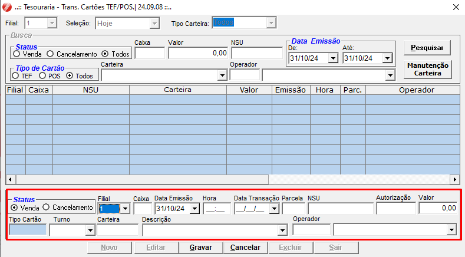
Passo 2: Menu: Financeiro > Movimentações Tesouraria > Fechamento Tesouraria/Caixa
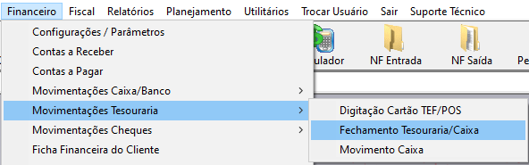
Para iniciar a digitação de um fechamento de caixa de operador, clicar no botão NOVO e preencher os campos
- Data Fec.: Data do fechamento de caixa a ser digitado (venda)
- Filial: número da loja
- Operador: Operador do caixa que trabalhou naquele dia
- Turno: Turno trabalhado, Pode colocar como UNICO
- Caixa: O pdv (Encontra-se no final do relatório de saída de operador com o Nome ECF). ex: 101
- Impor. Cartão: Todos os cartões passados no TEF referente a esse operador será importado.
- Valor total: valor Vendido referente ao operador no caixa (informação cedida na saída de operador)
- Carteira e Descrição: carteira de lançamento dos valores do caixa (Dinheiro, Cheque, Cartão Visa e Etc)
- Quebra: valor de quebra de caixa de operadores. Os valores continuaram a ser cobrados conforme instruções anteriores (Valor faltando acima de R$1,30 será cobrado de acordo analise do gerente)
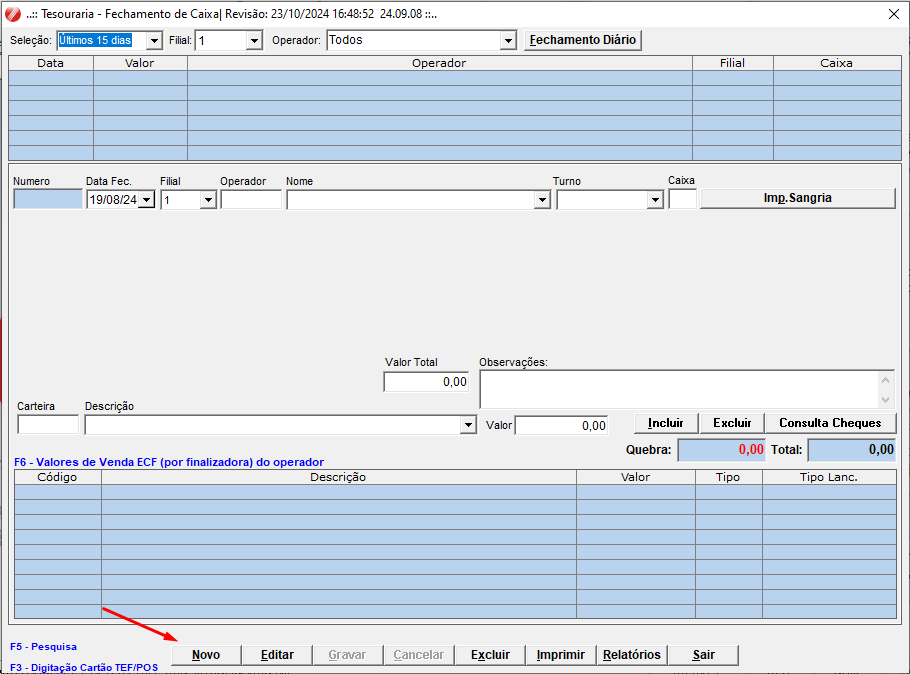
Atenção aos Lançamentos Manuais:
No fechamento existem algumas carteiras que devem ser lançadas manualmente. As carteiras lançadas manualmente são:
- Venda BH
- Convenio
- PIX POS
- VALE TROCA
- ACERTO FUTURO
- Voucher premiação
Selecione a carteira e depois clique em Incluir.
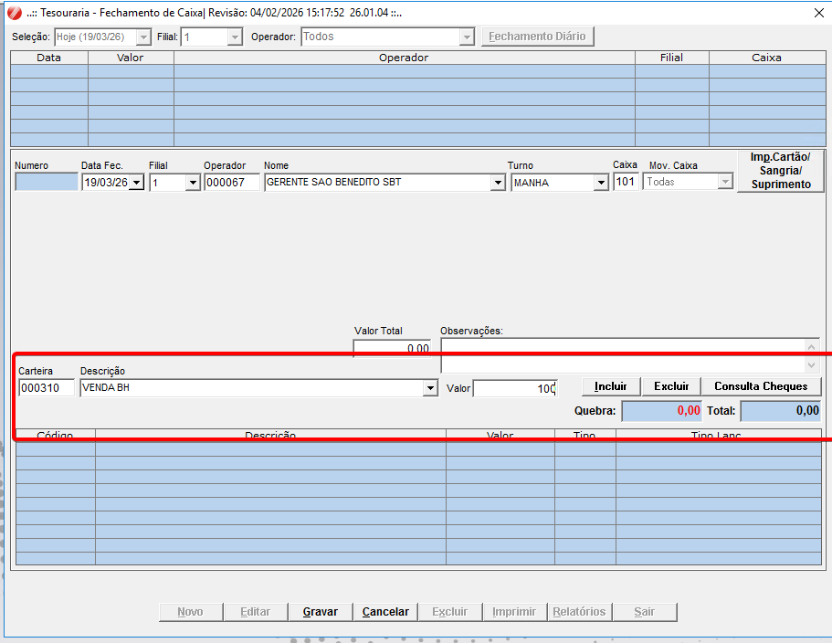
Para obter a venda BH do Vendedor, você deve puxar o relatório que está em:
Menu: Relatórios > Vendas > Pedido de venda > Tipo de relatório: vendedor > Status: aberto > Tipo: sintético (conforme a imagem).
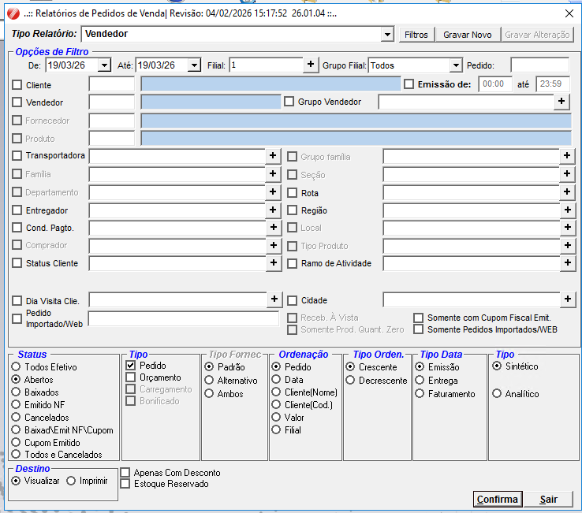
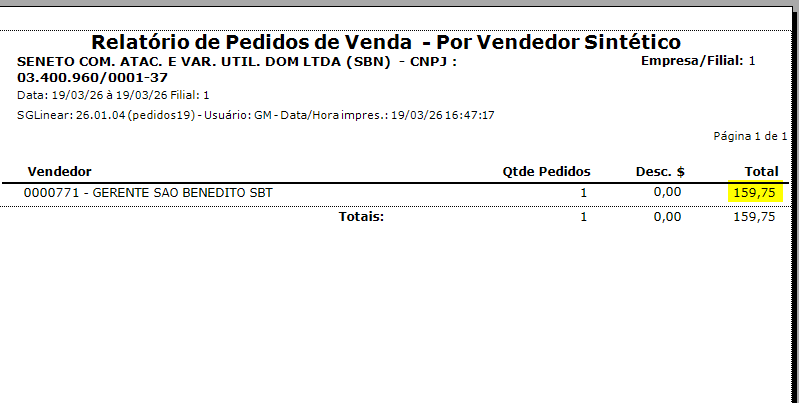
Passo 3: Dentro do menu do fechamento Tesouraria ir em Fechamento diário.
Após realizar o fechamento de todos os caixas operados no dia, será necessário realizar o fechamento diário.
Nesse momento, os lançamentos dos caixas gerarão seus financeiros (Contas a Receber) correspondentes a cada carteira de tesouraria registrada.
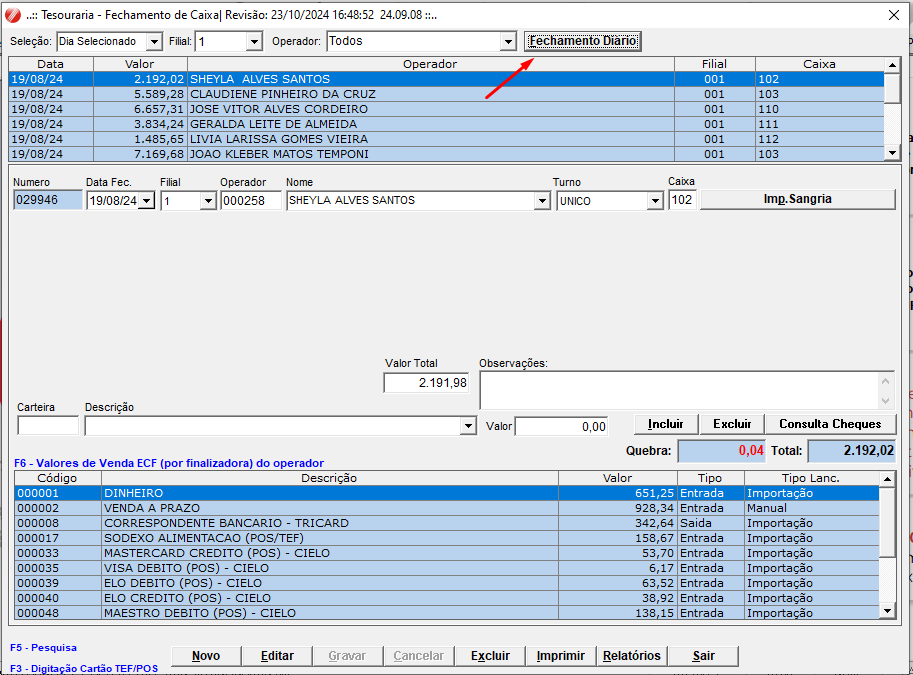
Para realizar o processo, basta clicar em "Novo", inserir a data do fechamento, clicar em "Carregar" e, em seguida, gravar os dados.
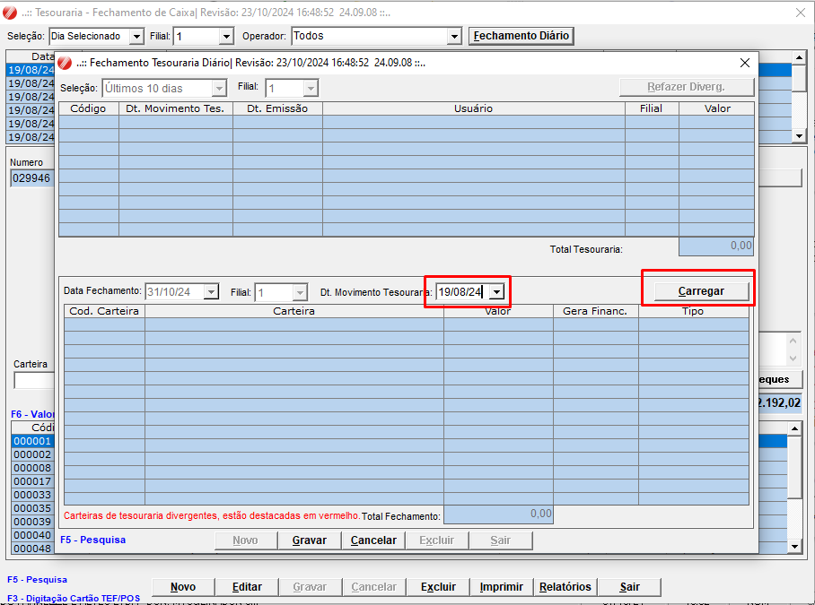
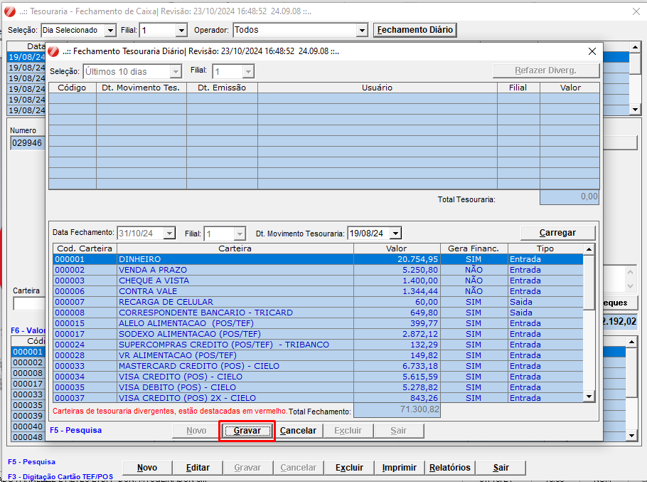
Conferência da Tesouraria
Menu: Relatórios > Financeiro > Tesouraria fechamento Tesouraria/ Caixa > Tipo de relatório: Fechamento Tesouraria/Caixa.
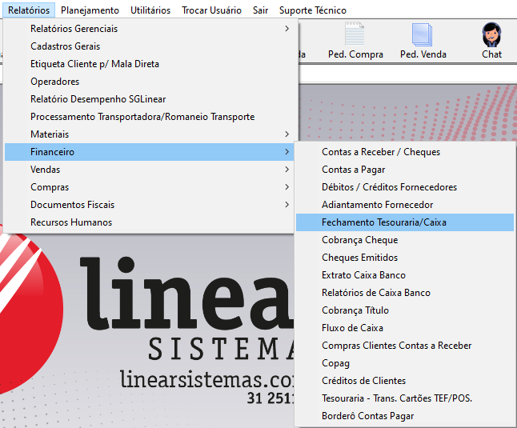
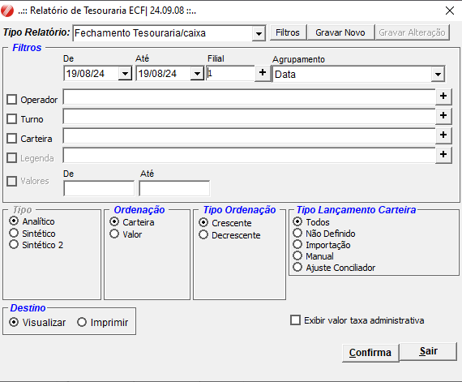
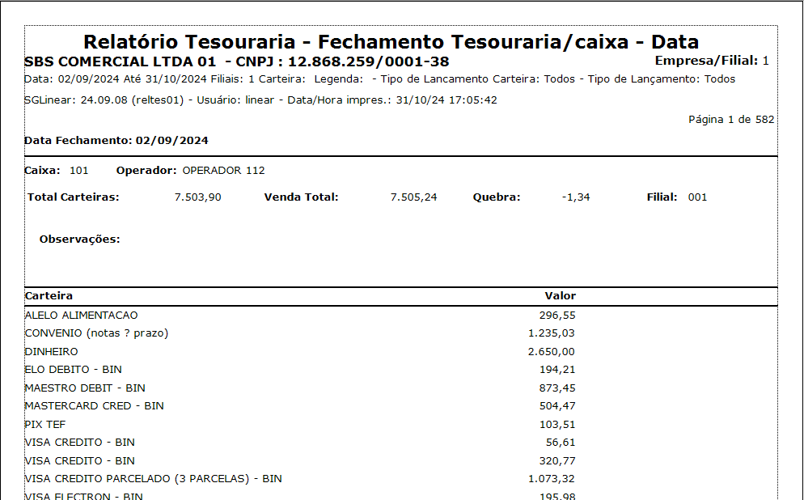
Transações por carteiras TEF / POS
Menu : Relatórios > Financeiro > Tesouraria transações TEF/ POS
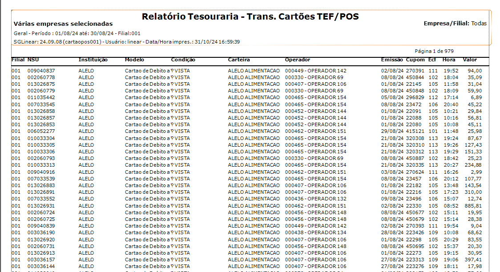
Conferência de Vendas
Para garantir que todos os cupons foram exportados para o servidor, verifique a coluna "diferença"; todos os três valores devem estar zerados.
Menu: Relatórios > Vendas > Vendas ECF > Tipo do relatório = 130
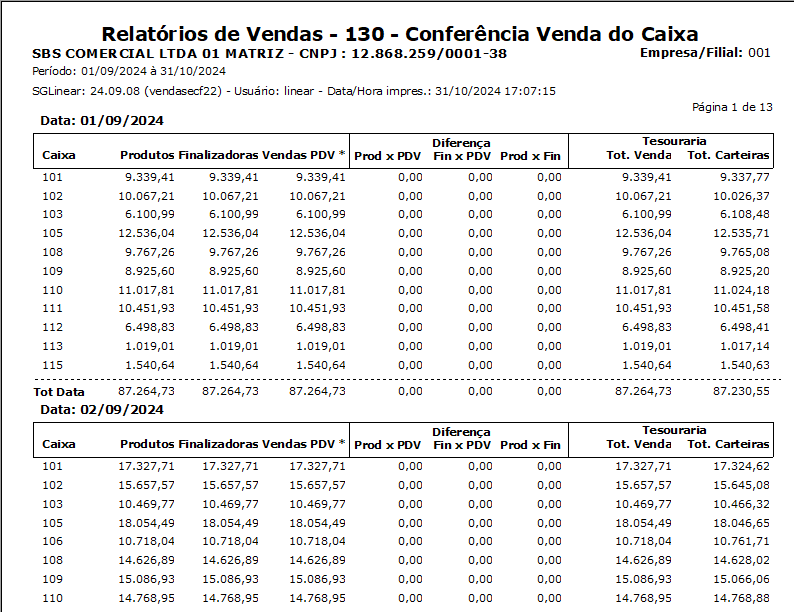
Para identificar quais operadores precisam realizar o fechamento e o valor total de vendas por operador, é necessário fazer a verificação.
Menu: relatórios > vendas > vendas ECF > Tipo do relatório = 060
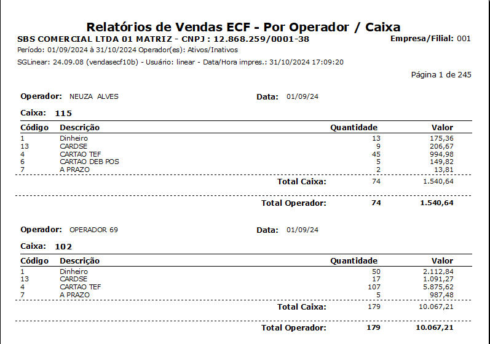
Para verificar valores sangrados no pdv
Menu: relatórios > vendas > vendas ECF > Tipo do relatório = 190
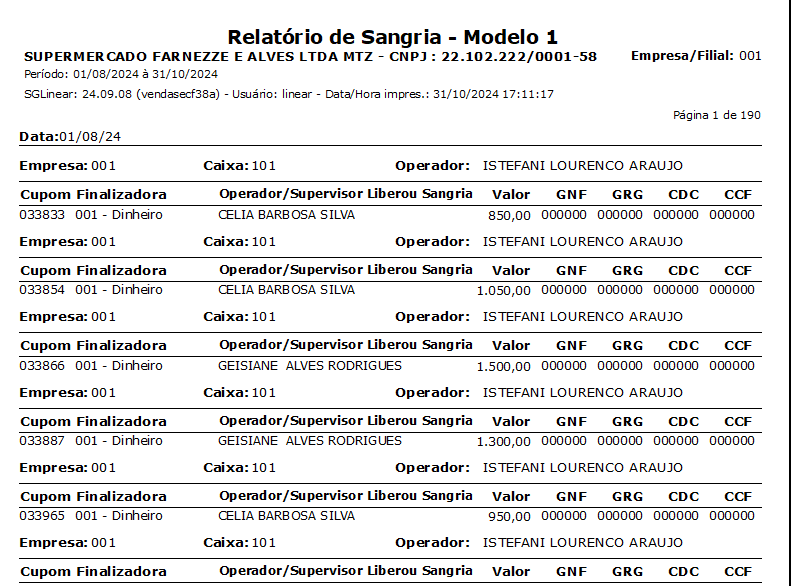